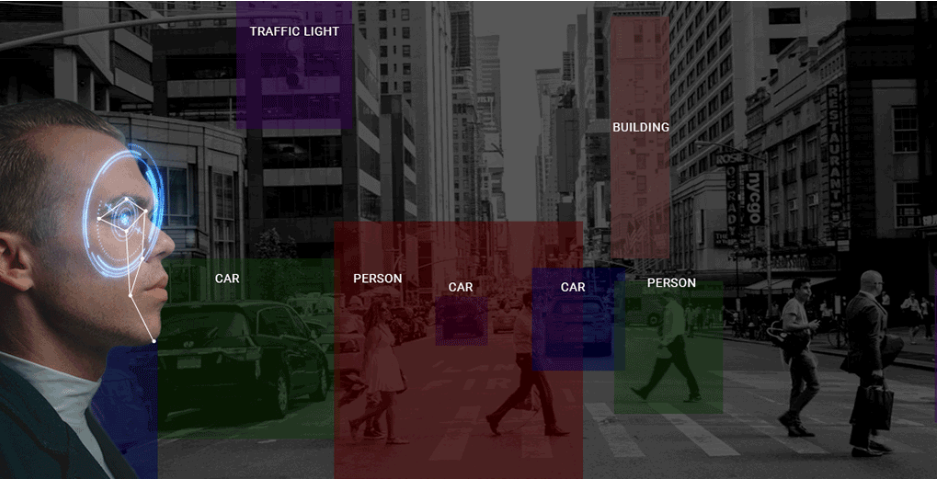
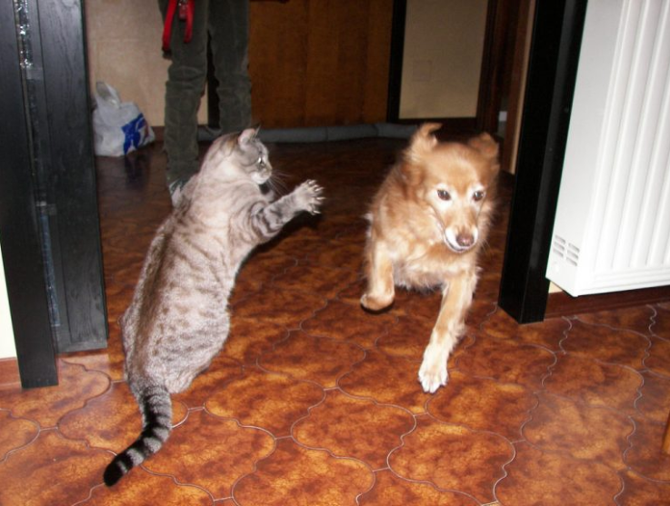
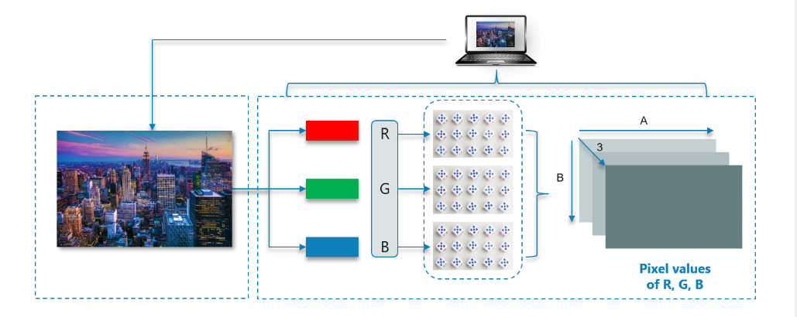

Open CV
What is Computer Vision?
Let me quickly explain what computer vision is before we dive into OpenCV. It’s good to have an intuitive understanding of what we’ll be talking about through the rest of the article.
The ability to see and perceive the world comes naturally to us humans. It’s second nature for us to gather information from our surroundings through the gift of vision and perception.
Take a quick look at the above image. It takes us less than a second to figure out there’s a cat, a dog and a pair of human legs. When it comes to machines, this learning process becomes complicated. The process of parsing through an image and detecting objects involves multiple and complex steps, including feature extraction (edges detection, shapes, etc), feature classification, etc.
What Is OpenCV?
OpenCV is a Python library which is designed to solve computer vision problems. OpenCV was originally developed in 1999 by Intel but later it was supported by Willow Garage.
OpenCV supports a wide variety of programming languages such as C++, Python, Java etc. Support for multiple platforms including Windows, Linux, and MacOS.
OpenCV Python is nothing but a wrapper class for the original C++ library to be used with Python. Using this, all of the OpenCV array structures gets converted to/from NumPy arrays.
This makes it easier to integrate it with other libraries which use NumPy. For example, libraries such as SciPy and Matplotlib.
Next up on this OpenCV Python Tutorial blog, let us look at some of the basic operations that we can perform with OpenCV.
How Does A Computer Read An Image?
Consider the below image:
We can figure out that it is an image of the New York Skyline. But, can a computer find this out all on its own? The answer is no!
The computer reads any image as a range of values between 0 and 255.
For any color image, there are 3 primary channels – Red, green and blue. How it works is pretty simple.
A matrix is formed for every primary color and later these matrices combine to provide a Pixel value for the individual R, G, B colors.
Each element of the matrices provide data pertaining to the intensity of brightness of the pixel.
Consider the following image: 
Note: For a black-white image, there is only one single channel.